Project 4 — Neural Radiance Fields (NeRF)
CS 280A — Computer Vision & Computational Photography
In this project I implemented an end-to-end Neural Radiance Field (NeRF) pipeline: from calibrating a phone camera, to training neural fields that map positions and viewing directions to density and color, and finally to rendering novel views by integrating samples along rays. This report is organized into:
- Part 0 — Data capture & calibration. Build a clean multi-view dataset of a tabletop object using COLMAP.
- Part 1 — 2D neural field warm-up. Fit a small network that memorizes a single image, exploring positional encoding and capacity.
- Part 2 — Full NeRF. Train a volumetric neural field on the Lego dataset and then on my own captured scene.
Part 0 — Calibrating My Camera and Capturing a 3D Scan
The first step was to get a solid dataset for NeRF: a calibrated camera and a set of images with accurate poses around a small object. I used an ArUco checkerboard to estimate intrinsics, walked around my object in a smooth loop, and then ran COLMAP for sparse reconstruction and pose estimation. Finally, I exported undistorted, pose-labeled images into a clean layout for pipeline processing.
What I did
- Took multiple photos of the calibration board to estimate \(f_x, f_y, c_x, c_y\) and distortion coefficients.
- Then imaged a sweep of a tabletop object, keeping distance and step size between views fairly constant.
- Ran COLMAP’s sparse reconstruction to recover camera poses and a sparse point cloud.
- Exported undistorted images and camera parameters into the NeRF dataset format for later training.
Part 0.1 — Calibrating the Camera
I captured the checkerboard/ArUco target from many angles and used OpenCV’s ArUco utilities to solve for the intrinsics. The resulting calibration is reused by both COLMAP and the NeRF training scripts.
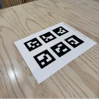
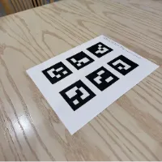
Part 0.2 — Capturing a 3D Object Scan
With the intrinsics fixed, I walked around the object and collected views with roughly even spacing. The goal was to keep the object centered while avoiding big jumps in angle or distance, which helps COLMAP converge and later produces smoother NeRF renderings.
Part 0.3 — Estimating Camera Pose
I passed the calibration and images to COLMAP’s pipeline. After feature matching and bundle adjustment, COLMAP produced per-image camera poses. The frustum visualizations below are derived from these outputs and gave me a sanity check that the reconstruction made sense.
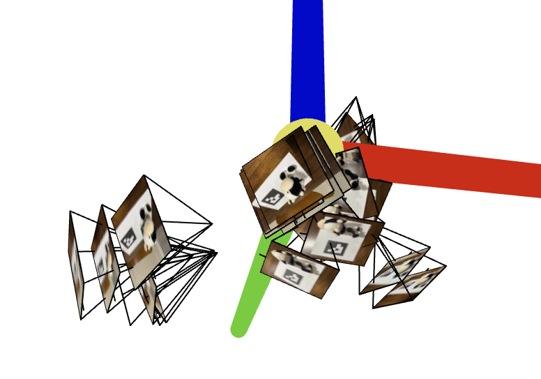
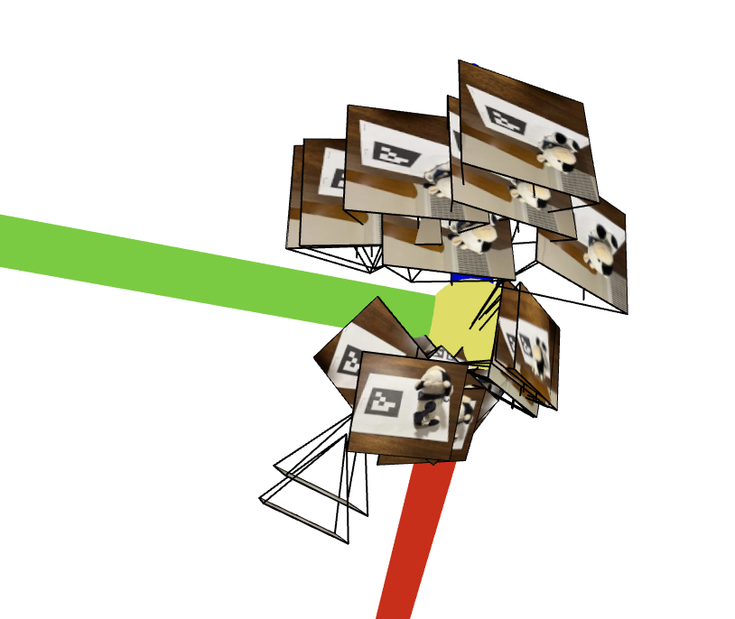
Part 0.4 — Undistorting Images & Building the Dataset
Finally, I undistorted all images and exported them along with poses into the assigned directory structure. This cleaned dataset (intrinsics + extrinsics + RGB frames) is what I feed into the NeRF implementation in Part 2.
0.4 Dataset Preparation
Then, I undistorted all the captured images using cv2.undistort() and packaged the data for NeRF training:
images_train |
(N_train, H, W, 3) |
Training images (0–255 range) |
c2ws_train |
(N_train, 4, 4) |
Camera-to-world matrices for training |
images_val |
(N_val, H, W, 3) |
Validation images |
c2ws_val |
(N_val, 4, 4) |
Camera-to-world matrices for validation |
c2ws_test |
(N_test, 4, 4) |
Camera-to-world matrices for novel views |
focal |
float |
Camera focal length |
Part 1 — Fitting a Neural Field to a 2D Image
Before tackling volume rendering, I started with a 2D neural field that learns a single image. The network takes in normalized 2D coordinates, applies sinusoidal positional encoding, and predicts RGB values. Training samples random pixels, compares predictions to ground truth, and optimizes mean squared error (MSE).
Model & Training Setup
Hyperparameters
- Batch size: 10,000
- Training steps: 2,000
- Optimizer: Adam with learning rate \(1\times10^{-2}\)
- Hidden width: 256
- Positional encoding frequencies \(L = 10\)
MLP Architecture
Inputs are PE-encoded 2D coordinates (dim = 42). The MLP processes them through several ReLU layers and outputs normalized RGB:
MLP( fc1: Linear(42 → 256), ReLU fc2: Linear(256 → 256), ReLU fc3: Linear(256 → 256), ReLU fc4: Linear(256 → 3), Sigmoid )
Reference & Custom Images
I trained on the provided fox image and also on a kitten photo (meow!) to see how the network behaves on two very different scenes.
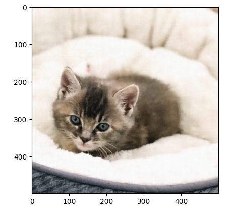
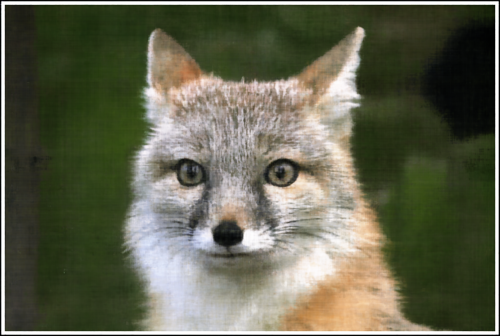
Training Progression
Every few hundred steps, I rendered the current network prediction on the full image grid. Early on, the model roughly captures colors and coarse shapes; later iterations refine edges and textures.
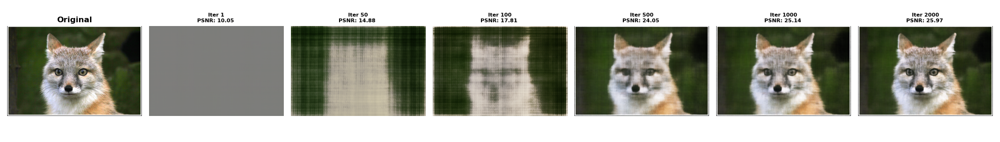
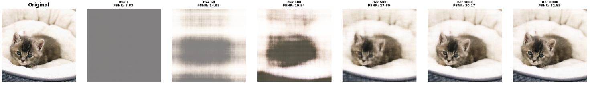
Positional Encoding & Width Sweep
I also swept hidden width and PE frequency to see how they affect sharpness and ability to capture fine structure. Larger widths and higher \(L\) values sharpen tiny features, but also risk overfitting or ringing.
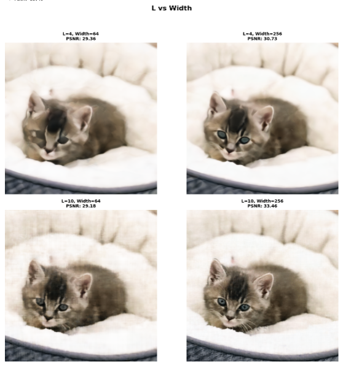
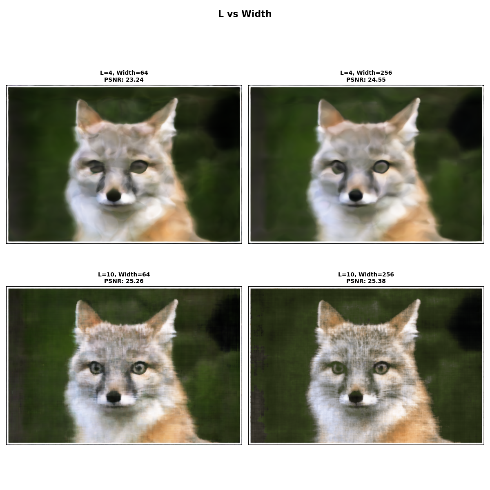
PSNR Curves
PSNR climbs quickly during the first few hundred iterations and then gradually plateaus as the MLP saturates. This matches the visual impression above: most structure appears early, with fine-tuning later.
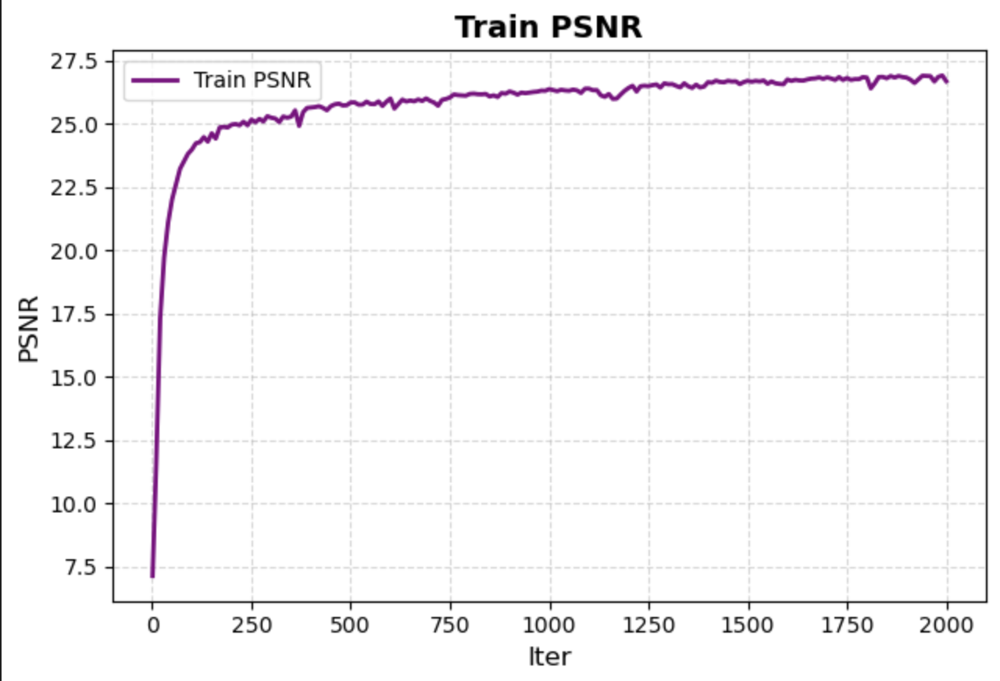
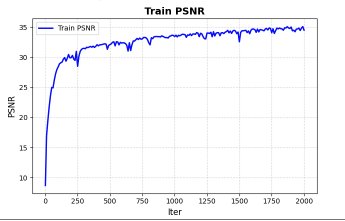
Part 2 — Fitting a Neural Radiance Field from Multi-view Images
With the 2D MLP working, I implemented a full NeRF for the Lego dataset. The pipeline: (1) load calibrated cameras, (2) shoot rays through each pixel, (3) sample points along rays, (4) predict density and color with a NeRF network, and (5) volume render the result and compare to ground-truth images.
Part 2.1 — Creating Rays from Cameras
Given per-image intrinsics and extrinsics, I created rays by unprojecting pixel centers to camera space, lifting them into 3D, and transforming them into world coordinates. Directions are normalized so every ray is represented as \(\mathbf{r}(t) = \mathbf{o} + t\mathbf{d}\).
- A dataset loader normalizes RGB values and stores camera matrices plus intrinsics.
pixel_to_camerainverts \(K\) to map UVs onto the image plane at unit depth.transformapplies the camera-to-world pose and extracts ray origins and directions.
Part 2.2 — Sampling Points along Rays
For each ray, I sample depth values between near and far bounds, then convert them into 3D positions by \(\mathbf{x} = \mathbf{o} + t\mathbf{d}\). An optional perturbation adds jitter to depths for stratified sampling, which reduces aliasing.
- Randomly sample ~10k rays per iteration to fit into GPU memory.
- Evenly spaced depths between near and far, with optional noise for stratification.
- 3D sample points are passed to the NeRF network for density and color.
Part 2.3 — Putting the Dataloading All Together
I then put all of this together by building the full dataloading pipeline and loooking at some rays via viser visualizations that show image camera frustums, rays, and sampled points.
- The first visualization is a ray from each of the images
- The second visualization is all the rays from one image
- The third shows rays from one concentrated area of one image
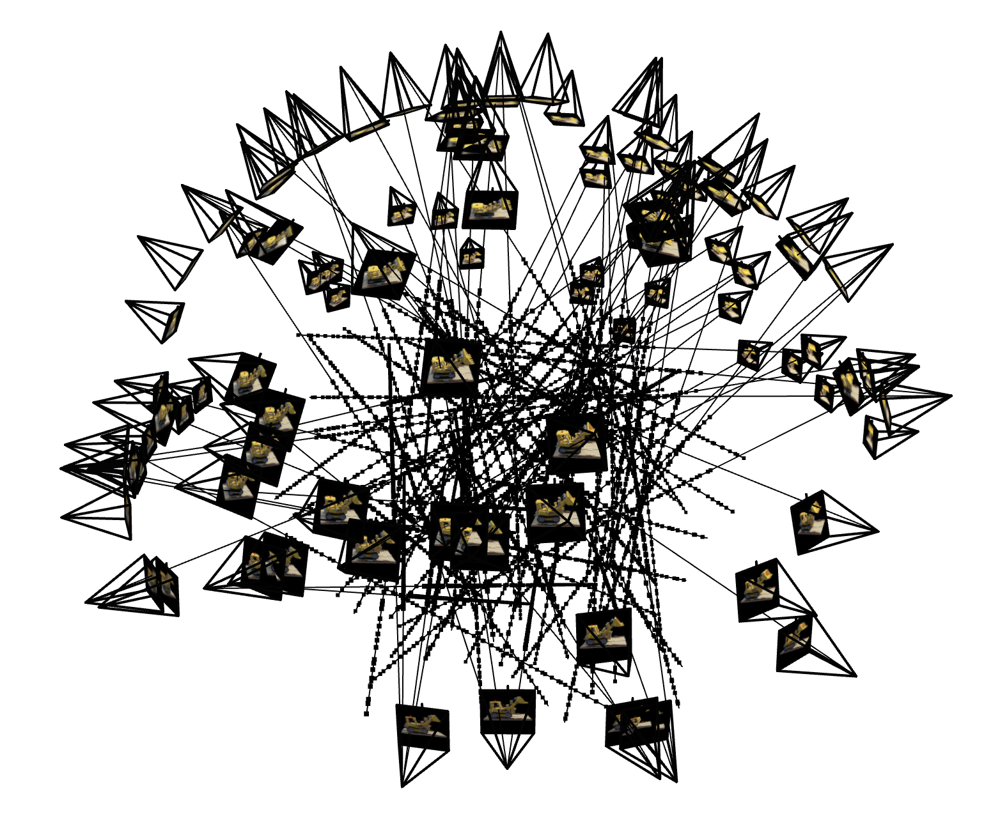
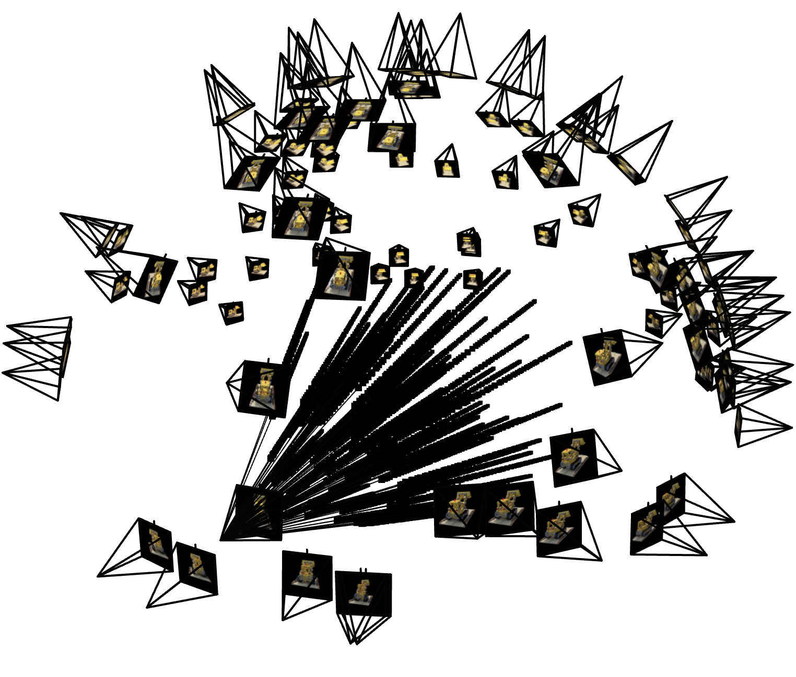
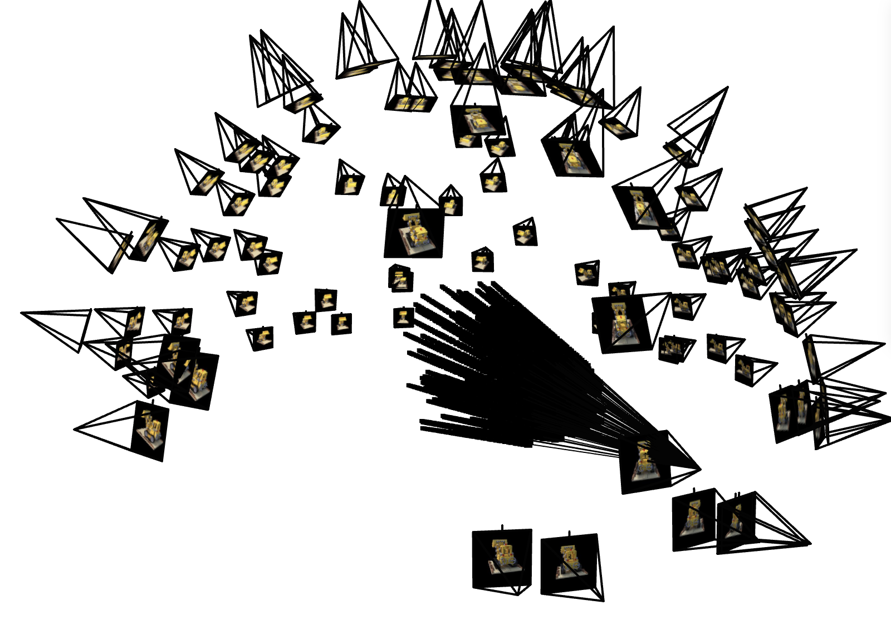
Part 2.4 — NeRF Network
My NeRF MLP takes a 3D world point and a 3D view direction. I first apply sinusoidal positional encoding to both. A stack of fully connected layers processes only the position encoding, with a skip connection in the middle that concatenates the original encoding back in.
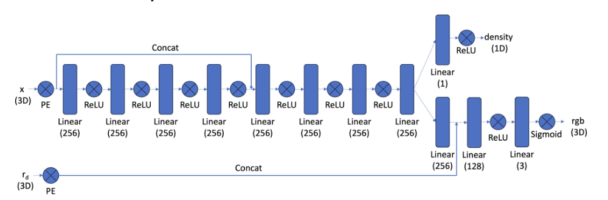
- The MLP runs on the encoded 3D position and has one skip layer for better detail.
- A density head takes the output and uses ReLU to keep
sigmanon-negative. - A color head projects the features, concatenates the view-direction encoding, and predicts RGB with a small MLP and final sigmoid.
Part 2.5 — Volume Rendering
To turn network outputs into images, I convert densities along each ray into alpha values, track how much light is left as we move along the ray, and blend the sample colors with those weights. Everything is written without in-place ops so autograd can backprop through it.
- \(\alpha = 1 - \exp(-\sigma \cdot \Delta t)\) at each sample point.
- Transmittance is the running product of \((1 - \alpha)\) along the ray.
- The final pixel color is a weighted sum of per-sample colors using these weights.
Training on Lego
I trained NeRF on the Lego dataset and saved validation renders and PSNR over time. Early steps get the rough shape; later steps sharpen edges, bricks, and lighting.
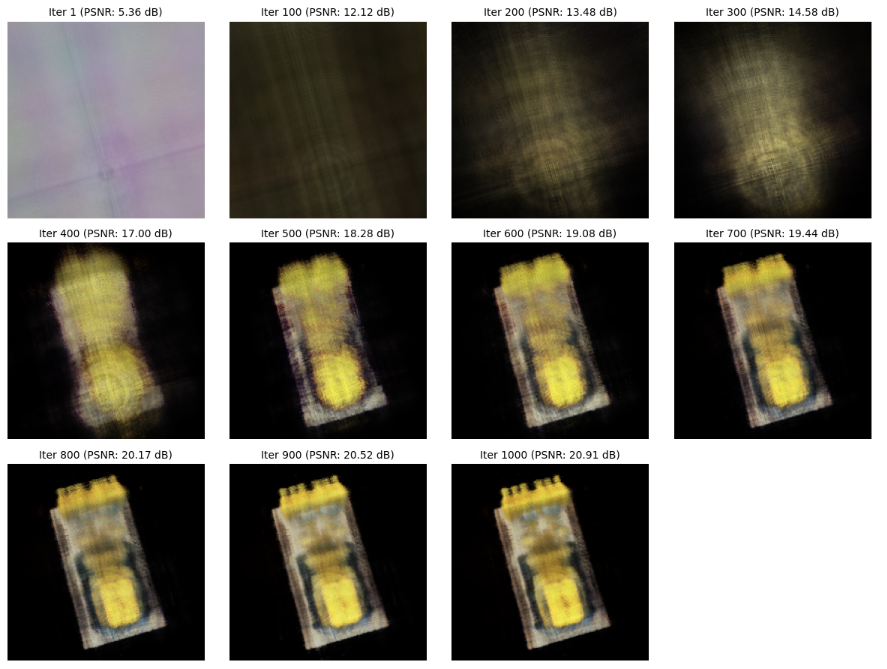
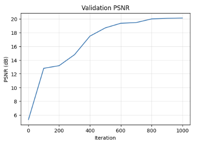
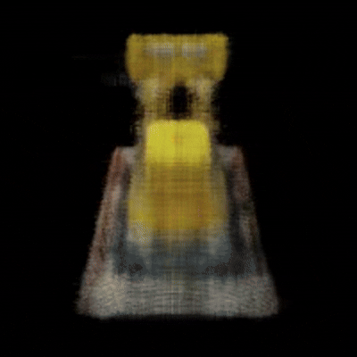
After training, the model turns a set of 2D Lego photos into a 3D scene that can be rendered smoothly from new viewpoints. Cool!
Bells & Whistles — Lego Depth Video
For this bell & whistle, I render a depth video of the Lego scene instead of RGB. During volume rendering, each sample already has a 3D position and thus a depth value along the ray. Rather than compositing per-sample colors, I composite the per-sample depths using the same NeRF weights.
Specifically, I reuse the alpha and transmittance from the color renderer, but replace the colors with the depths at each sample. The final pixel depth is the weighted sum of these depths. I then normalize this depth image for visualization and render it along the camera path to get a depth-map orbit of the Lego scene.
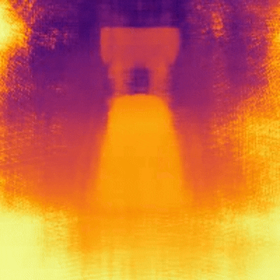
Part 2.6 — Training on My Own Data
After validating the implementation on Lego, I tried to use the same process on my cow object. I reused the recommended configuration but found that the model plateaued at a relatively low PSNR, so the reconstruction stayed softer and blurrier than the Lego run.
Training Configuration
- Device selection: used cuda for the fastest training times
- num_samples = 64, near = 0.02, far = 0.5 ⇒ step size = (far − near) / num_samples.
- batch_size = 10,000 rays, learning_rate = 5e-4 (Adam), num_iters = 10,000.
- chunk_size = 2,048
Debugging Attempts
- Tweaked near/far bounds to better fit the captured geometry.
- Extended iteration counts and tried different learning rate schedules.
Despite these tweaks, PSNR hovered around ~12 dB for this scene, which limited visual sharpness. It’s a reminder that hyperparameter tuning and data quality are crucial for NeRF to work.
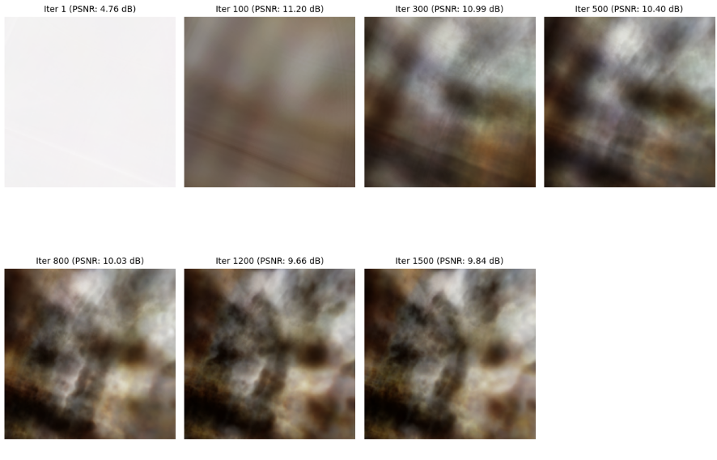
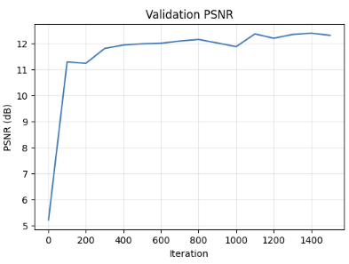
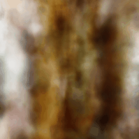
Implementing NeRF end-to-end was a great exercise in combining geometry, sampling, and deep learning. The Lego dataset showcases the full power of the method; my own captures highlighted how sensitive NeRF can be to pose quality, coverage, and scene complexity.